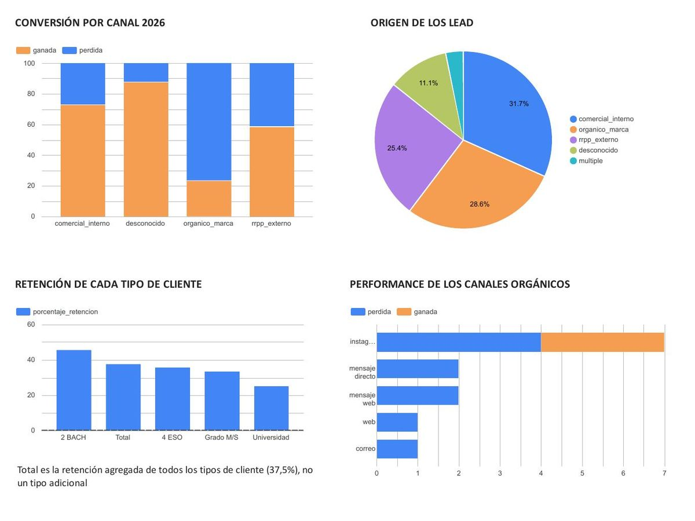
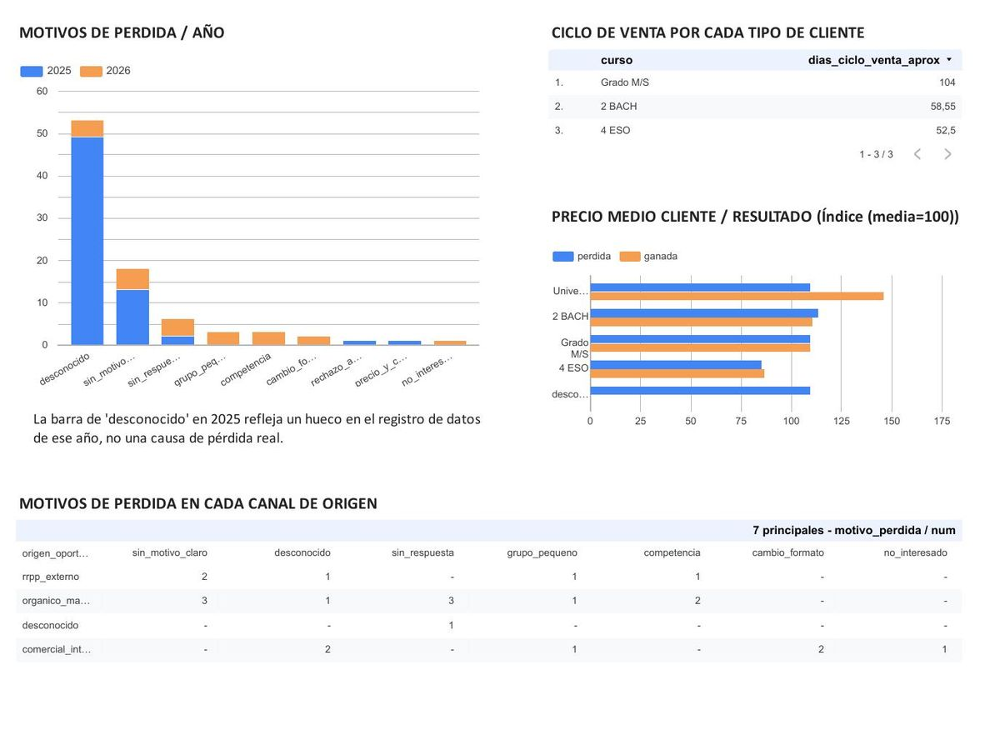
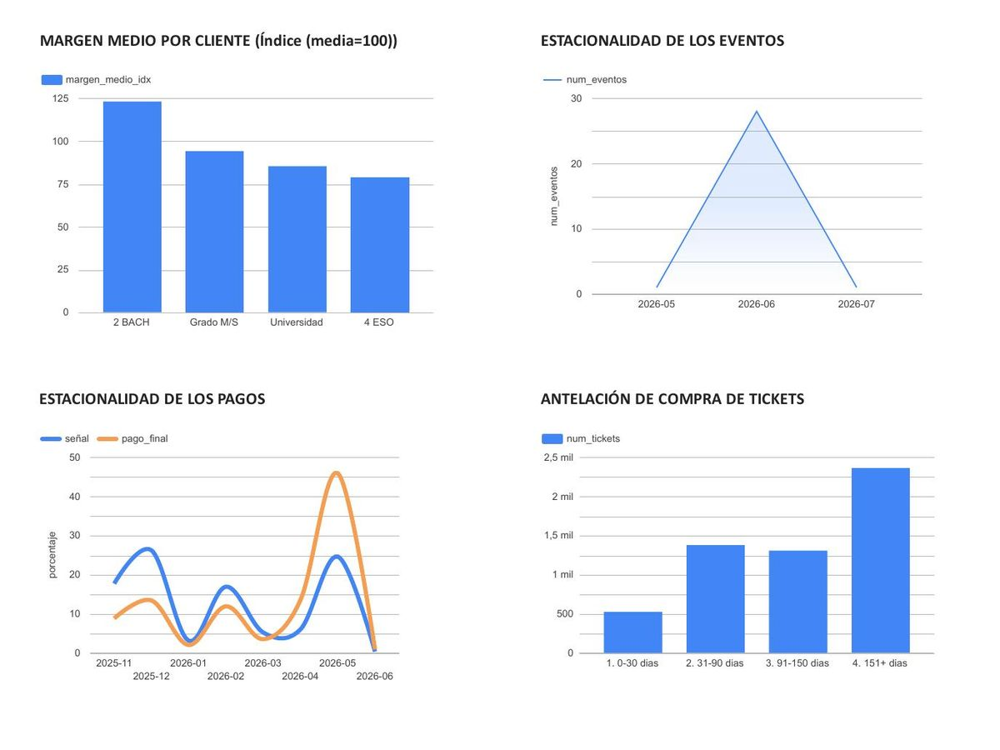

Análisis de datos · Temporadas 2025 y 2026Data analysis · 2025 and 2026 seasons
Perdían por silencio, no por precioThey were losing to silence, not to price
Cinco hojas de Excel sin estructura, dos temporadas completas de una empresa de eventos, y una pregunta que nadie se había hecho: por qué se pierden las oportunidades que se pierden.Five unstructured Excel sheets, two full seasons of an events company, and a question nobody had asked: why are the deals we lose being lost?
El punto de partidaThe starting point
STEP Xperience organiza fiestas de graduación en Andalucía. Dos temporadas de actividad vivían en cinco hojas de Excel sin ninguna estructura de base de datos detrás: confirmadas, oportunidades y pérdidas de cada año, más un histórico de 5.566 ventas de ticket. Nadie las había mirado nunca juntas.STEP Xperience runs graduation parties across Andalusia. Two seasons lived in five Excel sheets with no database behind them: closed deals, open opportunities and losses for each year, plus a history of 5,566 ticket sales. Nobody had ever looked at them together.
La pregunta no era «cuánto facturamos» —eso ya se sabía—, sino por qué se pierden las oportunidades que se pierden.The question wasn’t how much did we bill — that was known — but why the deals we lose are lost.
Lo que apareció al limpiarWhat surfaced during cleaning
Dos de las cinco hojas tenían un filtro de Excel activo que ocultaba filas en pantalla. Pandas las leía todas. Durante un rato los conteos no cuadraron con nada de lo que la empresa recordaba, hasta que se verificó fila a fila. Es el tipo de error que no da ningún aviso y que se lleva por delante un análisis entero.Two of the five sheets had an active Excel filter hiding rows on screen. Pandas read them all. For a while the counts matched nothing the company remembered, until every row was verified. It is the kind of error that raises no warning and quietly ruins an entire analysis.
Además: fórmulas rotas (#REF!, #VALUE!), texto libre mezclado en columnas numéricas, columnas de plantilla vacías, y campos donde un comercial interno y un RRPP externo se escribían igual. Se construyeron diccionarios de clasificación —origen del lead, tipo de contacto, motivo de pérdida— propuestos por el propio dato y confirmados uno a uno.Also: broken formulas (#REF!, #VALUE!), free text mixed into numeric columns, empty template columns, and fields where an internal rep and an external promoter were written identically. Classification dictionaries were built — lead source, contact type, loss reason — proposed by the data and confirmed one by one.
El hallazgoThe finding
El seguimiento medio a un lead antes de darlo por perdido es de 17 días. «Sin respuesta» es el motivo de pérdida más frecuente. Y está concentrado casi por completo en el canal orgánico — el único que no tiene a nadie empujando la relación.Average follow-up before writing off a lead: 17 days. «No reply» is the most frequent loss reason. And it is concentrated almost entirely in the organic channel — the only one with nobody pushing the relationship.
Los tres hechos apuntan a la misma palanca. El comercial interno cierra al 72,7% y el RRPP externo al 58,3%, porque alguien sostiene la conversación. El orgánico cierra al 23,1% — y aporta el 28,6% del volumen de cierres, así que no es un canal marginal que se pueda ignorar: es el segundo en volumen y el peor en conversión.The three facts point at the same lever. Internal reps close at 72.7% and external promoters at 58.3%, because someone keeps the conversation alive. Organic closes at 23.1% — and accounts for 28.6% of all closes, so it is not a marginal channel to ignore: it is second by volume and worst by conversion.
Tasa de cierre por canal de origen (2026)Close rate by lead source (2026)
Único año con el origen registrado tanto en ganadas como en perdidasThe only year with source recorded for both wins and losses
Y al abrir el orgánico por canal, el problema deja de ser genérico: Instagram convierte al 42,9%, casi como el RRPP externo. El resto —correo, mensaje directo, mensaje web, formulario— no cerró ni una sola de seis oportunidades. La muestra es pequeña, pero la señal cambia la recomendación: no hay que arreglar «el orgánico», hay que arreglar todo lo que no es Instagram.Opening organic by channel, the problem stops being generic: Instagram converts at 42.9%, almost like external promoters. The rest — email, DM, web message, web form — closed zero of six opportunities. Small sample, but the signal changes the recommendation: it is not organic that needs fixing, it is everything that is not Instagram.
Dentro del canal orgánicoInside the organic channel
Cierres sobre oportunidades, 2026Closes over opportunities, 2026
Y el precio, que era la sospecha inicial de todo el mundo, no influye: comparando ganadas y perdidas del mismo tipo de curso, los precios medios son casi idénticos en los tres segmentos con muestra suficiente.And price, everyone's initial suspicion, does not matter: comparing wins and losses within the same course type, average prices are nearly identical across the three segments with enough sample.
Retención, margen y cicloRetention, margin and cycle
La retención se definió de forma estricta —mismo centro y mismo curso cerrado los dos años—, porque un instituto que cierra 4.º ESO en 2025 y 2.º de Bachillerato en 2026 no es un cliente retenido: son promociones de alumnos distintas. Con esa definición, retiene el 37,5%.Retention was defined strictly — same school and same course closed in both years — because a school closing 4.º ESO in 2025 and 2.º Bachillerato in 2026 is not a retained client: they are different student cohorts. Under that definition, 37.5% retain.
Retención por tipo de clienteRetention by client type
Mismo centro y mismo curso, 2025 → 2026Same school and course, 2025 → 2026
Margen medio por tipoAverage margin by type
Índice, 100 = media del conjuntoIndex, 100 = dataset average
2.º de Bachillerato deja un 56% más de margen que 4.º de ESO (123 frente a 79) y además retiene mejor, con muestra fiable en ambos: 14 casos cada uno. El ciclo de venta aproximado, reconstruido cruzando la entrada del lead con la primera venta de ticket de ese evento, es de 57,9 días de media (mediana 53), disponible para el 67% de los casos.2.º Bachillerato yields 56% more margin than 4.º ESO (123 vs 79) and retains better, with reliable samples on both: 14 cases each. The approximate sales cycle, reconstructed by crossing lead entry with the first ticket sale for that event, is 57.9 days on average (median 53), available for 67% of cases.
Un negocio de un solo mesA one-month business
El 93,3% de los eventos se celebra en junio. Las señales entran en dos oleadas —noviembre-diciembre concentra el 43,9% y mayo el 24,6%—, pero el pago final se dispara en mayo: el 45,9% de todo el ingreso final del año entra en un solo mes. Eso no es un dato de marketing, es un riesgo de caja: casi la mitad del año depende de que mayo salga bien.93.3% of events happen in June. Deposits arrive in two waves — November–December holds 43.9% and May 24.6% — but final payment spikes in May: 45.9% of the year's final revenue lands in a single month. That is not a marketing fact, it is a cash-flow risk: nearly half the year depends on May going well.
El dashboardThe dashboard
Doce tablas agregadas en BigQuery, una por hallazgo, conectadas directamente a Looker Studio — sin lógica de negocio duplicada dentro del dashboard.Twelve aggregated tables in BigQuery, one per finding, wired straight into Looker Studio — with no business logic duplicated inside the dashboard.



Lo que estos datos no pueden decirWhat this data cannot tell you
- 2025 no registraba el origen de las oportunidades perdidas: el 100% figura como desconocido. Cualquier comparación agregada entre años sobre pérdidas queda descartada por diseño, no por prudencia.2025 did not record the source of lost opportunities: 100% shows as unknown. Any cross-year aggregate comparison on losses is ruled out by design, not out of caution.
- Varias categorías tienen de 3 a 6 casos. Universidad y Grado M/S no dan muestra para conclusión: un solo cliente mueve el porcentaje 25 puntos. Se señala en cada hallazgo en vez de presentarlos como concluyentes.Several categories have 3–6 cases. University and Grado M/S lack the sample for a conclusion: one client moves the percentage 25 points. Flagged in each finding rather than presented as conclusive.
- En 2026 se empezaron a agrupar institutos en un mismo evento para repartir costes, así que el margen por fila puede no reflejar la rentabilidad real de un centro en solitario. Ese contexto no está en ninguna columna: lo aporté yo, por haber estado dentro.In 2026 schools started being merged into single events to share costs, so per-row margin may not reflect a single school's real profitability. That context is in no column: I supplied it, from having been inside.
- No hay cohortes multi-año: con dos temporadas no se sostiene. Y el ciclo de venta es una aproximación, porque no existe fecha de cierre explícita en ningún sistema de origen.No multi-year cohorts: two seasons will not support them. And the sales cycle is an approximation, because no source system holds an explicit close date.
La conclusiónThe conclusion
El hallazgo más accionable de todo el análisis no es de marketing ni de precio, sino de proceso comercial. Reforzar la cadencia de seguimiento en los leads orgánicos —los que no tienen a nadie empujando— tiene probablemente más impacto en la tasa de cierre que cualquier cambio de precio o de mix de canales.The most actionable finding is not marketing or pricing — it is sales process. Reinforcing follow-up cadence on organic leads — the ones with nobody pushing — likely has more impact on close rate than any price change or channel-mix shift.